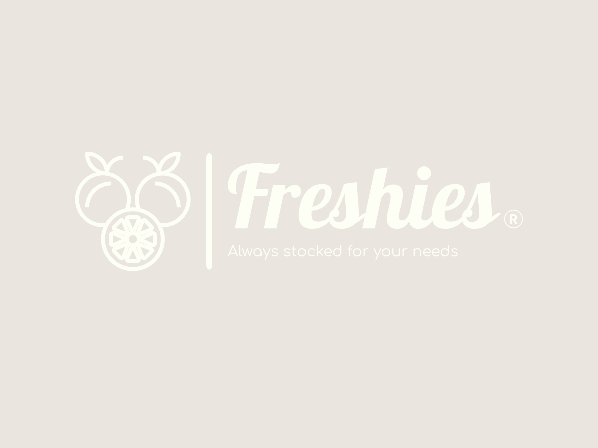
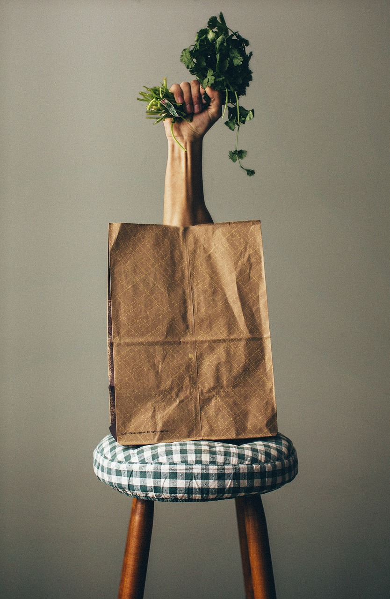
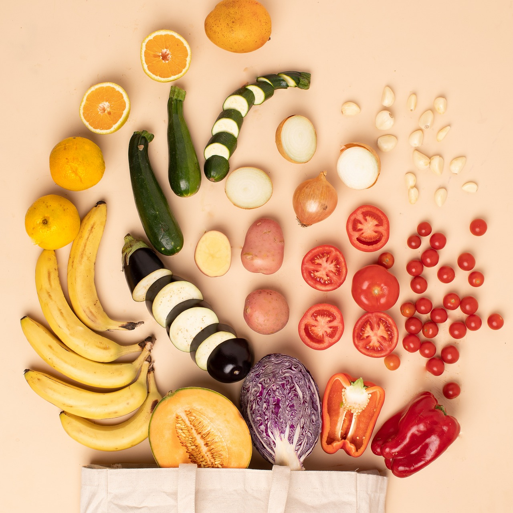

Online grocery game changer: Eat well, spend less

About us,Our missions
Founded in December 2023, Freshies isn't an average online grocery store. We represent a tasty uprising against pricey aisles and mediocre quality. We envisioned a Malaysia where everyone could afford reasonably priced, top-notch groceries that were readily available to both residents of busy cities and peaceful kampung communities.
Our tale started with a straightforward query: why should Malaysians have to choose between quality and affordability? We were aware that a solution was needed to close the gap and deliver the farm's abundance directly to your refrigerator without going over budget.
We thus put on our sleeves and set to work. We searched far and wide for the top vendors—those who are as passionate about fairness and excellence as we are...
Uprising of Freshies
We then created an online platform that is as user-friendly and seamless as a ripe tomato. We put together a group of fervent grocery heroes, all of them are champions of value and quality.
After that, we launched. The outpouring of support was tremendous. Malaysians welcomed our virtual baskets into their homes and embraced Freshies like a long-lost friend. As they opened the door to fresh produce, flavorful meats, and affordable pantry essentials, we could see the happiness in their eyes.
Freshies, though, is more than just a store. It has to do with community. By sharing the goal of creating a better shopping experience, we are connecting farmers, suppliers, and consumers to form a network. By working together with nearby farms, we're enabling them to connect with more people and guaranteeing their produce arrive at its peak. We bring transparency for Malaysians by letting them to know the source of their foods and the way it priced.
And, this is just the beginning of Freshies...

The future of Freshies
We have big dreams: we want to reach a wider audience, provide even more convenience and variety, and establish ourselves as a household brand that stands for delicious, reasonably priced, fresh food. However, our fundamental goal is still to bring about a change, one delectable bite at a time.
Welcome, then, to the Freshies community! Let's rewrite the history of Malaysian groceries by stocking your fridge with the best, feeding both your body and your budget, and starting a new chapter.